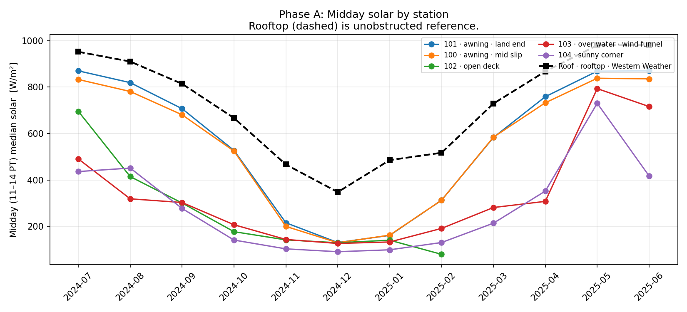
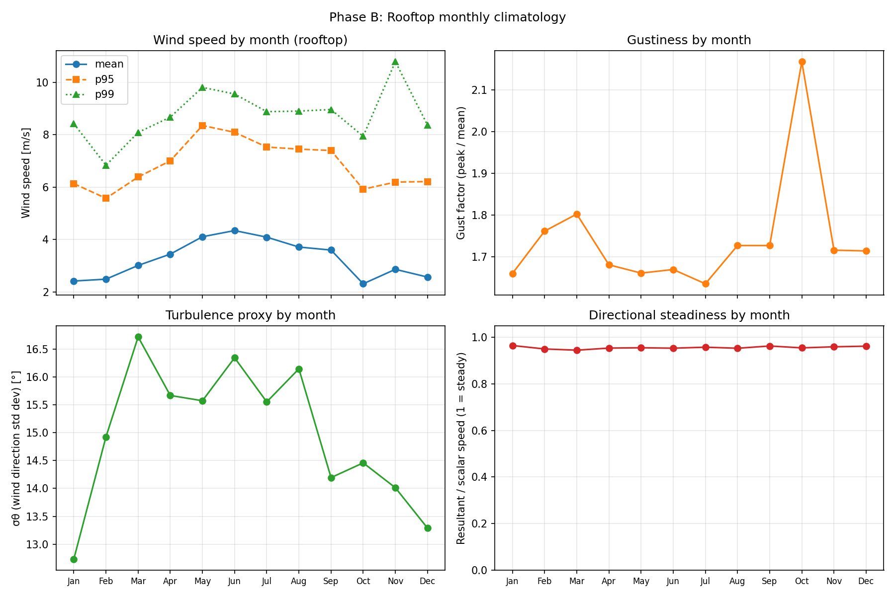
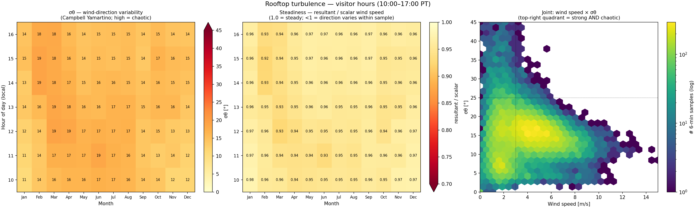
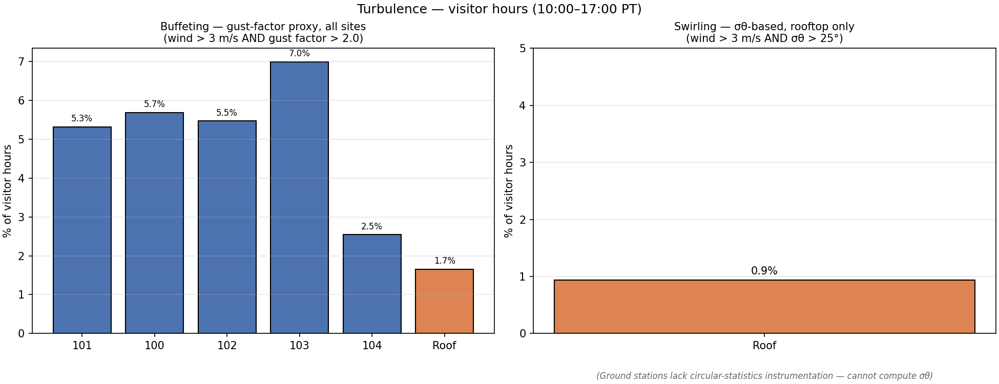
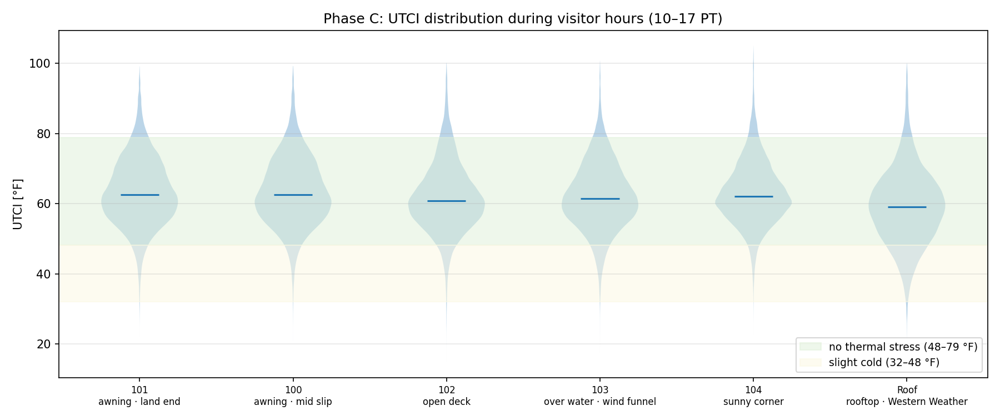
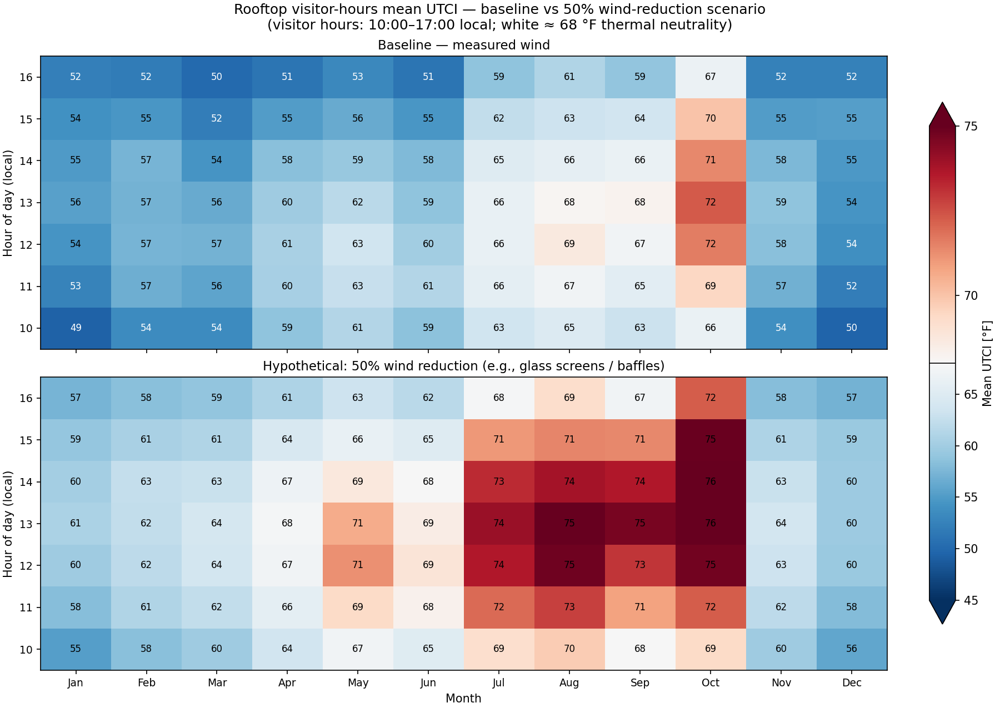

Intro: I'm a software engineer, not a weather scientist or architect, so take all of this with a big grain of salt. I did my best to use the tools properly and not introduce any systematic errors but I don't actually have any deep experience with this kind of problem. I made use of Claude Opus 4.7 to understand concepts and help produce code and graphs.
My initial thought, given the questions we were looking at it, was how to introduce wind and sunshine effects into the weather data. I looked at the state of the art on this, and settled on the UTCI (Universal Thermal Climate Index) human climate comfort standard. This required doing some additional data manipulation, which I describe below.
The UTCI standard assigns comfort ratings to temperature bands (see Bröde 2012, link below); with extremes removed, these are:
| Label | UTCI-Adjusted low (°F) | UTCI-Adjusted high (°F) |
|---|---|---|
| Very strong cold stress | -16.6 | 8.6 |
| Moderate cold stress | 8.6 | 32.0 |
| Slight cold stress | 32.0 | 48.2 |
| No thermal stress | 48.2 | 78.8 |
| Moderate heat stress | 78.8 | 89.6 |
| Strong heat stress | 89.6 | 100.4 |
| Very strong heat stress | 100.4 | 114.8 |
Python scripts were written using the pythermalcomfort package, which implements the calculation of the UTCI comfort-adjusted temperature. The calculation of UTCI requires dry bulb temperature, mean radiant temperature, wind speed at 10m above ground, and relative humidity. The data series available for the Exploratorium ground stations were processed to compute these quantities.
I then processed the 7/1/2024 to 6/30/2025 data sequence through UTCI and computed a number of descriptive graphs.
| Site name | Description | % of visitor hours (10-17 PT) in "no thermal stress" |
|---|---|---|
| 100 | Mid-slip on southern side | 89.4% |
| 101 | Land-end, close to Embarcadero, on southern side | 89.6% |
| 102 | On the deck, centerline of the slip. Shaded in mid-day, highest mean wind. Data gap in April 2025. | 88.6% |
| 103 | In the constriction where the cafeteria building widens; wind tunnel effect. Highest guest factor with turbulent eddies. Shady at midday. | 89.2% |
| 104 | Sunny corner where the cafeteria and main pier meet. Lowest wind, fewest gusts, moderate midday solar. | 91.2% |
| "Western Weather" | Rooftop station, close to the water, far from wind obstacles. Higher and smoother wind; median temperature 3.1°F cooler than warmest deck spot, driven by wind chill. Lowest comfort by far; 14.1% of total hours in "slight cold stress". | 81.7% |
Make sure to click on each site button to observe diurnal UTCI heatmap, tail behavior, and discomfort category mix.

I then looked at wind trends, turbulence, and extremes, with a focus on the Western Weather rooftop station. The data show:
Extremes (gust >X m/s as % of time over the year):
| site | calm (<0.5m/s) | gust >5m/s | gust >10m/s | gust >15m/s |
|---|---|---|---|---|
| 104 (corner) | 22.1% | 16.1% | 0.6% (~50 hr/yr) | 0.01% |
| 101 (land awning) | 18.6% | 26.2% | 1.4% (~120 hr/yr) | 0.02% |
| 100 (mid awning) | 18.8% | 25.6% | 1.95% (~170 hr/yr) | 0.03% |
| 103 (wind funnel) | 16.9% | 31.1% | 3.7% (~320 hr/yr) | 0.08% |
| 102 (open deck) | 14.6% | 30.1% | 4.1% (~360 hr/yr) | 0.12% |
| Roof (WW) | 4.9% | 45.1% | 6.4% (~560 hr/yr) | 0.14% |

The rooftop (EXPLORE3b) has the only instrument that measures turbulence on the site. The "campbell_wind_direction_std_dev" column uses the Yamartino algorithm to determine standard deviation of wind direction (written as σθ, or sigma-theta) (see Campbell documentation), and it also reports the resultant/scalar wind ratio.
The ground stations have gust speed but no direction-variance measurement; for them we can compute gust factor by dividing (peak/mean) as a proxy. All values below are visitor hours (10:00–17:00 PT).
Descriptive findings:
See graph at bottom-right below for wind-speed vs. variability. Descriptive features of σθ percentiles, during visitor hours:
| σθ (std. dev. of wind direction), during visitor hours | |
|---|---|
| metric | σθ (°) |
| mean | 15.4 |
| p50 | 15.0 |
| p90 | 22.5 |
| p99 | 42.9 |
For reference, σθ < 10° is like open ocean; 10–20° is typical open terrain; 20–30° is moderately turbulent, like a suburban setting; 30–45° is urban dense-building; >45° is chaotic. So the rooftop median (15°) sits in the open-terrain band; the p99 (43°) reaches the upper edge of moderately turbulent, nearly chaotic.
| Steadiness (resultant / scalar wind speed), during visitor hours | |
|---|---|
| metric | steadiness |
| mean | 0.95 |
| p50 | 0.97 |
| p10 | 0.92 |
The p10 of 0.92 indicates that even in the least-steady 10% of 6-min samples, resultant magnitude is still 92% of scalar — wind direction varies little within each averaging window.
Looking for strong wind when turbulence is high, wind > 3 m/s AND σθ > 25°, we find only 0.93% of visitor hours. Strong wind on the rooftop is predominantly smooth; chaotic wind is predominantly weak. The two conditions rarely co-occur.

Rooftop turbulence during visitor hours (10:00–17:00 PT): mean σθ by month × hour (left, fixed 0–45° scale), mean steadiness ratio (center, fixed 0.7–1.0), and the joint distribution of wind speed and σθ (right, log-scaled 6-min sample count; dotted lines mark the 3 m/s and 25° thresholds).
Based on some reading I describe "buffeting" as wind > 3 m/s and a gust factor > 2.0. We can then compute how many hours of buffeting happen in at each site.
| % of visitor hours with wind > 3 m/s AND gust factor > 2.0 | |||
|---|---|---|---|
| station | mean gust factor | p95 gust factor | % buffeting |
| 103 (wind funnel) | 2.25 | 4.61 | 7.0% |
| 100 (awning, mid) | 2.17 | 4.31 | 5.7% |
| 102 (open deck) | 2.05 | 4.09 | 5.5% |
| 101 (awning, land) | 2.13 | 4.19 | 5.3% |
| 104 (sunny corner) | 2.01 | 3.92 | 2.6% |
| Roof (EXPLORE3b) | 1.68 | 2.29 | 1.7% |
Station 103 has the highest gust factor (mean 2.25, p95 4.61) and the highest buffeting frequency (7.0%) among ground stations — consistent with its physical position at the wind constriction near the building corner. Station 104 has the lowest values among ground stations (2.6% buffeting). The rooftop has the lowest values of any station: mean gust factor 1.68 and 1.7% buffeting frequency, which follows from the steady wind direction we observe.

Left: % of visitor hours in "buffeting" conditions (wind > 3 m/s AND gust factor > 2.0) for all six stations using the gust-factor proxy. Right: % of visitor hours in "swirling" conditions (wind > 3 m/s AND σθ > 25°) for the rooftop only — ground stations lack the instrumentation to compute σθ.
Okay, so now we want to know, how comfortable do these statistics say our sites are, and does that make sense? And how would we project this to a rooftop site?
| Visitor-hours (10:00–17:00 PT) comfort | |||||||
|---|---|---|---|---|---|---|---|
| station | role | % no-stress | % slight-cold-stress | % heat-stress | % mod-cold-or-worse | UTCI p50 (°F) | UTCI p95 (°F) |
| 101 | awning, land | 89.6% | 4.5% | 5.8% | 0.1% | 62.6 | 79.7 |
| 100 | awning, mid | 89.4% | 4.4% | 6.1% | 0.1% | 62.6 | 79.9 |
| 102 | open deck | 88.6% | 5.5% | 5.7% | 0.2% | 61.0 | 79.7 |
| 103 | funnel spot | 89.2% | 6.1% | 4.6% | 0.1% | 61.5 | 78.4 |
| 104 | sunny corner | 91.2% | 3.6% | 5.1% | 0.0% | 62.1 | 79.0 |
| Roof (WW) | rooftop | 81.7% | 14.1% | 3.9% | 0.3% | 59.0 | 77.0 |
By this analysis, 104 is the most comfortable spot on the deck — by ~1.6–2.6 percentage points over the other deck stations. It combines: low wind (the most calms, lowest p95), partial shade (200 W/m² midday median), and shelter from bay flow. The rooftop is meaningfully worse than every deck station.
Stations 100 and 101 are the sunniest in summer. At midday 102/103/104 are shaded, probably by the north-side pier buildings. The comfort difference between sites is largely driven by wind, not solar.
October was the worst comfort month at every deck site (an October 2024 heat-dome event with weak onshore wind). All sites dip to ~80% no-stress during that stretch.
I'm reporting % no-stress only — visitor hours where UTCI falls in 48–79 °F (9–26 °C). I'm not including UTCI's "slight cold stress" (32–48 °F / 0–9 °C) as tolerable, even though the standard frames it that way.
UTCI's slight-cold band assumes the visitor wears appropriate clothing for the conditions (sweater or light jacket). Rooftop and deck visitors arriving from the museum interior in indoor clothing would feel visibly cold within a minute or two in that band. On the deck stations, the slight-cold fraction is small (~4–6% of visitor hour); on the rooftop it is 14% and dominates the comfort gap. The slight-cold band is broken out explicitly in the rooftop scenario tables in Section 4.Drivers of discomfort, by direction:

The rooftop in its current position is the worst site for visitor comfort. Only 81.7% of visitor hours are in "no thermal stress."
The reduction is driven by wind chill: mean wind 3.22 m/s at the rooftop vs 1.5–2.2 m/s on the deck, with no consequential air-temperature difference. The wind is also strongly directional — ~50% of all hours and ~70% of the strong wind comes from the WSW (240°–260°), with directional steadiness 0.95 (effectively steady year-round). The rooftop sits in a smooth, persistent wind, with low turbulence.
Two hypothetical mitigation scenarios were re-run through the full UTCI pipeline using the measured rooftop data: 50% wind reduction (measured wind × 0.5) and 75% wind reduction (measured wind × 0.25). To simplify things I just did a uniform reduction from every direction. Visitor hours (10:00–17:00 PT) only.
| scenario | % no-stress | % slight-cold | % heat-stress | mean UTCI (°F) | Δ mean UTCI |
|---|---|---|---|---|---|
| baseline (measured wind) | 81.7% | 14.1% | 3.9% | 59.2 | — |
| wind × 0.5 (50% reduction) | 92.6% | 1.4% | 6.1% | 65.7 | +6.5 °F |
| wind × 0.25 (75% reduction) | 90.2% | 0.0% | 9.8% | 69.0 | +9.8 °F |
Reducing wind chill causes the slight-cold band to drop from 14.1% to 1.4%. This is because many rooftop hours did not have cold air temperature but had enough wind chill to leave the comfort range.
Reducing wind causes an increase in heat stress during the summer months; 75% wind reduction causes a sharper increase. Designing to preserve cooling winds in summer could be beneficial.
| position | % no-stress (visitor hours) |
|---|---|
| Rooftop with 50% wind reduction | 92.6% |
| 104 — sunny corner (current best ground spot) | 91.2% |
| Rooftop with 75% reduction (over-sheltered) | 90.2% |
| 101, 100, 103, 102 (other deck stations) | 88.6–89.6% |
| Rooftop baseline (current condition) | 81.7% |

Mean UTCI (°F) by month × visitor hour-of-day at the rooftop: baseline (top) and 50%-wind-reduction scenario (bottom), on a shared color scale, centered at 68 °F. The mitigation scenario provides an all-times warming, most visible in winter mornings and afternoons.
The rooftop winds make the roof more tolerable in summer.
| Rooftop site; monthly % of visitor hours in "no thermal stress" | |||
|---|---|---|---|
| month | baseline | 50% reduction | 75% reduction |
| Jan | 70.6% | 96.7% | 100.0% |
| Feb | 77.8% | 96.6% | 99.8% |
| Mar | 71.8% | 95.4% | 96.5% |
| Apr | 82.3% | 97.0% | 96.0% |
| May | 84.3% | 93.6% | 86.4% |
| Jun | 87.2% | 99.1% | 95.6% |
| Jul | 92.7% | 87.9% | 75.9% |
| Aug | 92.2% | 86.1% | 74.6% |
| Sep | 87.9% | 86.4% | 78.8% |
| Oct | 79.9% | 77.6% | 75.3% |
| Nov | 83.3% | 99.8% | 100.0% |
| Dec | 73.9% | 94.1% | 100.0% |
A wind screen strategy that could be opened in the summer months might get the best of both worlds.
Directionality of wind suggests that a WSW-side barrier could address almost all of the wind; 50% of all wind and 75% of all strong wind is from that direction.
Turbulence data suggests that wind chill is the main comfort issue, not turbulence; buffeting frequency is low on the roof.
Other observations:
The URLs used to retrieve data from the Exploratorium ERDDAP system were:
http://erddap.exploratorium.edu:8080/erddap/tabledap/exploratoriumOutdoorGalleryWindTurbulenceStudy.csv?time%2Cair_temp_f%2Cair_temp_feels_like_f%2Capp_temp_f%2Cdew_point_f%2Coutdoor_humidity%2Csolar_watts_per_sqm%2Cuv_index%2Cwind_speed_mph%2Cwind_gust_mph%2Cwind_direction%2Cpressure_relative_inHg%2Cpressure_absolute_inHg%2Cbattery_v%2Cstation_id%2Clatitude%2Clongitude&time%3E=2025-07-01T00%3A00%3A00Z&time%3C=2025-06-30T00%3A00%3A00Z
http://erddap.exploratorium.edu:8080/erddap/tabledap/explorewesternweather6min.csv?time%2Cid_number%2Cdst_status%2Cbattery%2Cair_temp_c%2Cair_temp_f%2Crelative_humidity%2Cdew_point_c%2Cdew_point_f%2Cwet_bulb_c%2Cwet_bulb_f%2Crain_yesterday%2Crain%2Crain_today%2Cmeasured_pressure%2Csea_level_pressure_inHg%2Csea_level_pressure_mb%2Csolar_radiation_calcm2s%2Csolar_radiation_kWm2%2Csolar_radiation_MJm2s%2Csolar_radiation_Wm2%2Csolar_in%2Caverage_wind_speed%2Cwind_speed_ms%2Cunit_wind_direction%2Cunit_wind_direction_std_dev%2Cgust_speed_mph%2Cgust_speed_ms%2Cgust_direction%2Cwind_speed_dup%2Cresultant_wind_speed_ms%2Cresultant_wind_direction%2Ccampbell_wind_direction_std_dev%2Cstation_id%2Clatitude%2Clongitude&time%3E=2024-07-11T00%3A00%3A00Z&time%3C=2025-06-30T00%3A00%3A00Z